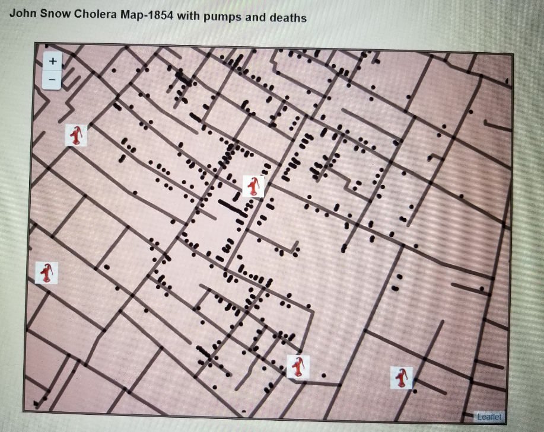
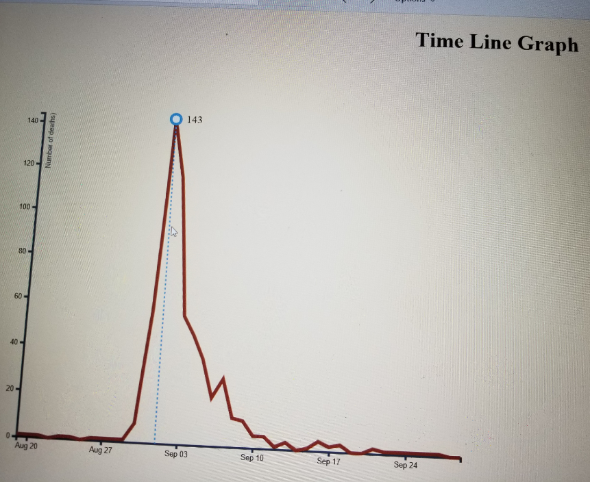
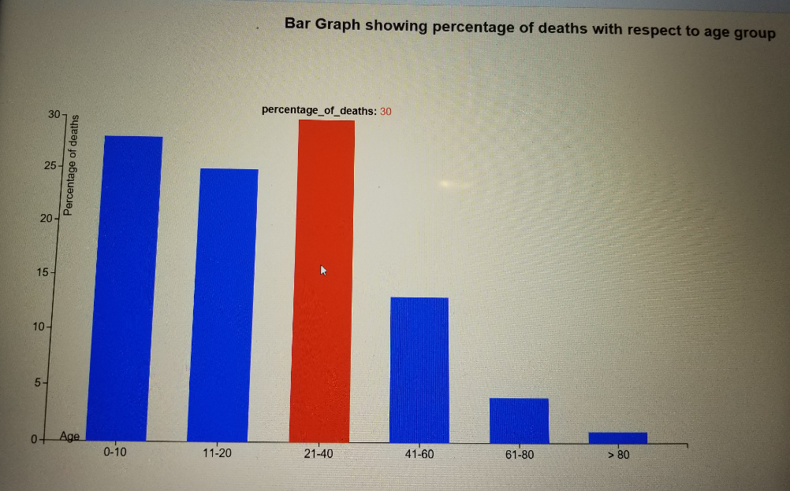

Map and Graphs
The vector map that was created gives the clear idea about where the pumps and maximum deaths has occurred. I used brown
background for the map, gray color for streets, black dots to represent the deaths and pump icon represents the location of
the pumps.
The Time line graph shows the number of deaths from 19th Aug to 29th Sep. For the line graph I used red color to represent
the deaths and blue color for interactive representation of deaths for that particular day. From the graph we can analyze
that maximum deaths happen on Sep 1st.
The Bar graph shows the percentage of deaths with respect to ages. The bars are given blue color and red color is given for
interactive representation of deaths for particular age. From the graph we can analyze that maximum percentage of deaths
occurred in the age group of 21-40.


